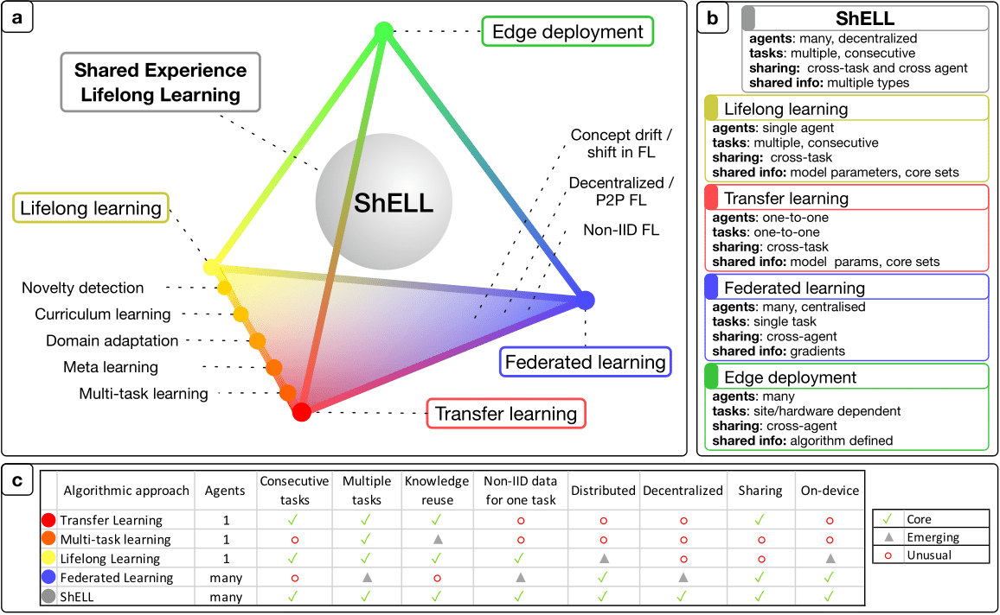

Research
I am interested in scalable robot learning. Below are my works.
|
|
|
Articulate Anything
Long Le , Jason Xie, William Liang, Hung-Ju Wang, Yue Yang,
Jason Ma, Kyle Vedder, Arjun Krishna, Dinesh Jayaraman, Eric Eaton, 2024
Preprint
ArXiv /
Code /
Website
A major bottleneck in scaling robot learning in simulation is the lack of interactable
3D environments. We present a SOTA method, leveraging VLMs to automatically generate articulated 3D
models from any input modality including text, real-world images, or videos.
|
|
|
Distributed Continual Learning
Long Le, Marcel Hussing, and Eric Eaton 2024
Preprint
ArXiv
We study the intersection of continual and federated learning, in which independent agents
face unique tasks. We develop the mathematical formulation for the setting, develop algorithms
for sharing data, model weights, and modules, and provide extensive empirical results across network
bandwiths,
and topology.
|
|

|
A collective AI via lifelong learning and sharing at the edge
A Soltoggio et al 2024
Nature Machine Intelligence
Paper
We survey approaches and challenges in developing a collaborative life-long AI system on edge
devices.
|
|
Template from Jon Barron.
|
|